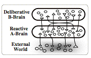
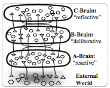
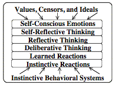
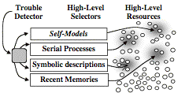
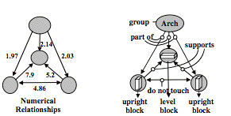
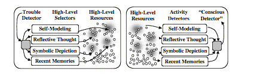
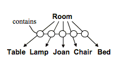
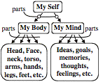

This is a draft (July 28, 2005) of Chapter IV of The Emotion Machine by Marvin Minsky. Please send comments to minsky@media.mit.edu
“No philosopher and hardly any novelist has ever managed to explain what that weird stuff, human consciousness, is really made of. Body, external objects, darty memories, warm fantasies, other minds, guilt, fear, hesitation, lies, glees, doles, breath-taking pains, a thousand things which words can only fumble at, co-exist, many fused together in a single unit of consciousness”— Iris Murdoch, in The Black Prince. 1993.
What kinds of creatures have consciousness? Does it exist in chimpanzees—or in gorillas, baboons, or orangutans? What about dolphins or elephants? Are crocodiles, frogs, or fish aware of themselves to any extent—or is consciousness a singular trait that distinguishes us from the rest of the beasts?
Of course, those animals won’t answer questions like, “What is your view of the nature of mind.” But when we interview mystical thinkers who claim to know what consciousness is, their replies are seldom more enlightening.
Sri Chinmoy 2003: “Consciousness is the inner spark or inner link in us, the golden link within us that connects our highest and most illumined part with our lowest and most unillumined part.”
Some philosophers even insist that no one has better ideas about this.
Jerry Fodor 1992: "Nobody has the slightest idea how anything material could be conscious. Nobody even knows what it would be like to have the slightest idea about how anything material could be conscious. So much for the philosophy of consciousness."
Is consciousness an all-or-none trait that has a clear and definite boundary?
Absolutist: We don’t know where consciousness starts and stops, but every object must be conscious or not—and, clearly, people are conscious, while rocks are not.
Or does consciousness come in different degrees?
Relativist: Everything has some consciousness. An atom has only a little of it, while brains can have it to greater degrees—and perhaps there are no limits to it.
Or is that question still too vague to justify trying to answer it?
Logicist: Before you go on about consciousness, you really ought to define it. Good arguments should start right out by stating precisely what they are about. Otherwise, you'll begin with a shaky foundation.
The Logicist’s policy might seem 'logical'—but, although we don't like to be imprecise, a clear definition can make things worse, until we’re sure that our ideas are right. For, consciousness is one of those suitcase-like words that we use for many types of processes, and for different kinds of purposes. It’s the same for most of our other words about minds, such as awareness, sentience or intelligence.[i]
So instead of asking what ‘consciousness’ is, we’ll try to examine when, how, and why people use those mysterious words. But why do such questions even arise? What, for that matter, are mysteries?
Daniel Dennett 1991: “A mystery is a phenomenon that people don't know how to think about—yet. Human consciousness is just about the last surviving mystery. There have been other great mysteries [like those] of the origin of the universe and of time, space, and gravity. ... However, Consciousness stands alone today as a topic that often leaves even the most sophisticated thinkers tongue-tied and confused. And, as with all of the earlier mysteries, there are many who insist—and hope—that there will never be a demystification of consciousness.”
Indeed, many of those who ‘insist—and hope’ that consciousness cannot be explained still maintain that it alone is the source of most of the virtues of human minds.
Thinker 1: Consciousness is what binds all our mental events together, and thus unifies our present, past, and future into our continuous sense of experience.
Thinker 2: Consciousness makes us 'aware' of ourselves, and gives us our sense of identity; it is what animates our minds and gives us our sense of being alive.
Thinker 3: Consciousness is what gives things meanings to us; without it, we would not even know we had feelings.
Wow! Wouldn’t it be astonishing if any one principle, power, or force could endow us with all those abilities?
However, I’ll argue that it would be a mistake to believe in any such entity—because we ought to be asking this question, instead: “Isn’t it remarkable that any single word or phrase could have come to mean so many different things?”
William Calvin [1995] and George Ojeman “Modern discussions of consciousness … usually include such aspects of mental life as focusing your attention, things that you didn't know you knew, mental rehearsal, imagery, thinking, decision making, awareness, altered states of consciousness, voluntary actions, subliminal priming, the development of the concept of self in children, and the narratives we tell ourselves when awake or dreaming.”
All this should lead us to conclude that consciousness is a suitcase-like word that we use to refer many different mental activities, which don’t have a single cause or origin—and, surely, this is why people have found it so hard to “understand what consciousness is.” The trouble was that they tried to pack into a single box all the products of many processes that go on in different parts of our brains—and this produced a problem will remain unsolvable until we find ways to chop it up. However, once we imagine a mind as made of smaller parts, we can replace that single, big, problem by many smaller, more solvable ones—which is just what this chapter will try to do.
∞∞∞∞∞∞∞∞∞∞∞∞∞∞∞∞∞∞∞∞
Aaron Sloman 1994: “It is not worth asking how to define consciousness, how to explain it, how it evolved, what its function is, etc., because there's no one thing for which all the answers would be the same. Instead, we have many sub-capabilities, for which the answers are different: e.g. different kinds of perception, learning, knowledge, attention control, self-monitoring, self-control, etc."
To see the variety of what human minds do, consider this fragment of everyday thinking.
Joan is starting to cross the street on the way to deliver her finished report. While thinking about what to say at the meeting, she hears a sound and turns her head—and sees a quickly oncoming car. Uncertain as to whether to cross or retreat, but uneasy about arriving late, Joan decides to sprint across the road. She later remembers her injured knee and reflects upon her impulsive decision. “If my knee had failed, I could have been killed. Then what would my friends have thought of me?”
It might seem natural to ask, "How conscious was Joan of what she did?" But rather than dwell on that ‘consciousness’ word, let’s look at some of the things that Joan actually did.
Reaction:
Joan reacted quickly to that sound.
Identification: She recognized it as being a sound.
Specification: She classified it as the sound of a car.
Attention: She noticed certain things rather than others.
Indecision: She wondered whether to cross or retreat.
Imagining: She envisioned two possible future conditions.
Selection: She selected a way to choose among options.
Decision: She chose one of several alternative actions.
Planning: She constructed a multi-step action-plan.
Reconsideration: Later she reconsidered this choice.
She also did other things like these.
Learning:
She created descriptions and stored them away.
Recollecting: She retrieved descriptions of prior events.
Embodiment: She tried to describe her body's condition.
Expression: She constructed some verbal representations.
Narration: She arranged these into storylike structures.
Intention: She changed some goals and priorities.
Apprehension: She was uneasy about arriving late.
Reasoning: She made various kinds of inferences.
She also used many processes that involved reflecting on what some of those other processes did.
Reflection:
She thought about what she had recently done.
Self-Reflection: She reflected on what she had thought about.
Empathy: She imagined some other persons’ thoughts.
Reformulation: She revised some of her representations.
Moral
Reflection: She evaluated what she has done.
Self-Awareness: She characterized her mental condition.
Self-Imaging: She made and used models of herself.
Sense of Identity: She regarded herself as an entity.
This is only the start of a catalog of some of Joan’s mental activities—and if we want to understand how her thinking works, we’ll need to have much better ideas about how each of those activities work and how they all are organized. At various points in the rest of this book, we’ll examine each item on that list and try to break it into parts—to see what processes it might involve. However, to accomplish this, we’ll to begin with some way or ways to divide an entire mind into parts—and our everyday folk-psychology abounds with ideas about dividing the functions of minds into pairs like these:
Conscious vs. Unconscious
Premeditated vs. Impulsive
Deliberate vs. Spontaneous
Intentional vs. Involuntary
Cognitive vs. Subcognitive[ii]
We’ll discuss such ‘dumb-bell’ distinctions in 9-2, and will conclude that each such division is simply too crude. For example, the division between conscious and unconscious does not distinguish between information that is inaccessible because one has no way to access it, or because it is actively censored or ‘repressed,’ or because (as Freud suggested) it has been ‘sublimated’ into some form that one cannot recognize—or because one has simply failed to retrieve it (that is, to bring it into one’s active working memory). In any case, this book will argue that little good will come from attempts to divide our minds into only two parts.
On the other hand, it would not often help to try to split a mind into too many parts, because that can make it difficult to develop useful principles.
We have already seen some useful ways to split a mind into large numbers of different parts—for example, as sets of resources or as collections of rules. However, for making better generalizations, we’ll need a design that has fewer components. Accordingly, every chapter of this book will exploit the idea that a mind is composed of processes that operate on just a few “levels.” Beginning with three such levels will help us to avoid “dumb-bell” distinctions, and the following chapter will argue that we’ll need at least three more, higher, levels of mind. However, the rest of this chapter will mainly focus on the question of why people are so prone to pack so many different concepts into that single “suitcase of consciousness.”
∞∞∞∞∞∞∞∞∞∞∞∞∞∞∞∞∞∞∞∞
Socrates: Imagine men living in an underground den, which has an opening towards the light—but the men have been chained from their childhood so that they never can turn their heads around and can only look toward the back of the cave. Far behind them, outside the cave, a fire is blazing, and between the fire and the prisoners there is a low wall built along the way, like the screen that puppeteers have in front of them, over which they show the puppets.
Glaucon: I see.
Socrates: And do you see men passing along the wall carrying all sorts of vessels, and statues and figures of animals made of wood, stone, and various materials, which appear over the wall? Some of them are talking, others silent.
Glaucon: You have shown me a strange image …
Socrates: Like us, they see nothing but only the shadows of themselves and of those other objects, which the fire throws on the opposite wall of the cave… Then in every way such prisoners would deem reality to be nothing else than those shadows...—Plato, in The Republic
Can you think about what you are thinking right now? In a literal sense, that’s impossible—because each new such thought would alter the thoughts that you were just thinking before. However, you can settle for something slightly less, by imagining that your brain (or mind) is composed of two principal parts: Let’s call these your A-brain and B-Brain.

Now suppose that your A-Brain gets some signals from the external world (via such organs as eyes, ears, nose, and skin)—and also can react to these, by sending signals that make your muscles move. By itself, the A-brain is a separate animal that only reacts to external events, but has no sense of what they might mean. For example, when the fingertips of two lovers come into intimate physical contact, the resulting sensations, by themselves, have no particular implications. For there is no significance in those signals themselves: their meanings to those lovers lie in how they represent and process them in the higher levels of their minds. (See Pohl 1970.)
Similarly, your B-Brain is connected so that it can react to signals that it receives from A, and then can react by sending signals to A. However, B has no direct connection to the outer world so, like the prisoners in Plato’s cave, who see only shadows on a wall, the B-brain mistakes A’s descriptions for real things. The B-Brain does not realize that what it perceives are not objects in the external world, but are merely events in the A-brain itself.
Neurologist: That also applies to you and me. For, whatever you think you touch or see, the higher levels of your brain never can actually contact these—but can only interpret the representations of them that your other resources construct for you.
Nevertheless, although the B-Brain cannot directly perform any physical actions, it still can affect the external world, by controlling the ways in which A might react. For example, if B sees that A has got stuck at repeating itself, it might suffice for B to instruct A to change its strategy.
Student: Sometimes, when I've misplaced my eyeglasses, I keep looking for them in the very same place. Then a silent voice reproaches me, suggesting that I stop repeating myself. But what if I were crossing a street when suddenly my B-brain said “Sir, you’ve repeated the same actions with your leg for more than a dozen consecutive times. You should stop right now and do something else.” That could cause me a serious accident.
To prevent such mistakes a B-Brain would need appropriate ways to represent things. In this case, you would be better off if your B-brain represented ‘walking to a certain place’ as a single extended act like, “Keep moving your legs till you get to the other side of the street.”
However, this raises the question of how that B-Brain could acquire such skills.[iii] Some could be built into it from the start but, for the B-Brain to learn new techniques, it might itself need similar help—which could come from a level above it. Then while the B-Brain deals with its A-Brain world, that ‘C-Brain’ in turn will supervise B.

Student: Would not this raise more difficult questions, because each higher level would need to be smarter and wiser?
Not necessarily, because that C-brain could act like a “manager” who has no special expertise about how to do any particular job—but still could give ‘general’ guidance like this:
If B’s descriptions seem too
vague, C tells it to use more specific details.
If B’s is buried in too much detail, C suggests more abstract descriptions.
If what B is doing is taking too long, C tells it to try some other technique.
Furthermore, if both B-Brain and C-brain get stuck, we could add yet more levels to our multilayer mind-machine.
Student: How many such levels does a person need? Do we have dozens or hundreds of them?
In our earlier chapters, we suggested that our mental resources are organized into at least these levels of processes:

Figure 4- 1
We can see each of these as aspects of Joan’s decision to hurry across that street:
What
caused Joan to turn toward that sound? [Instinctive]
How did she know that it was the sound of a car? [Learned]
What resources were used to make her decision? [Deliberative.]
How did she choose which resources to use? [Reflective]
Did she feel that she made a good decision? [Self-reflective.]
Did her actions live up to her principles? [Self-Conscious.]
We know that by the time of birth, every infant is already equipped with a variety of instinctive reactions, and has started to add learned reactions to these. Then, over time, we progressively add more deliberative ways to reason, imagine, and plan for the future. Later we build a new layer in which we start to do reflective thinking about our own thoughts—and two-year-old children already are making additional ways to self-reflect about why and how they thought those things. And, eventually, we begin to think more self-consciously about which things to regard as right or wrong to do. Chapter 5 will add many more details about such a system might be organized.
Student: Does your theory really need so many different levels? Are you sure that you can’t make do with fewer of them? Indeed, why should we need any ‘levels’ at all—instead of a single big, cross-connected network of resources?
∞∞∞∞∞∞∞∞∞∞∞∞∞∞∞∞∞∞∞∞
There is an evolutionary reason for why we should not expect the brain to be a single, highly interconnected network: it would be almost impossible for such a system to evolve—because it would have so many flaws or ‘bugs’ that it could not survive for long. And, of course, no system could do very much if its parts were not interconnected enough. This means that whenever we increase a system’s size, its performance is likely to decline—unless we also improve its design. Let’s give this argument a name:
The Organism Principle: When a system evolves to become more complex, this always involves a compromise: if its parts become too separate, then the system’s abilities will be limited—but if there are too many interconnections, then each change in one part will disrupt many others.
This surely is the reason why the bodies of all living things are composed of the distinctively separate parts we call “organs.” In fact, that’s why we call them organisms:
Organism: A body made up of organs, organelles, or other parts that work together to carry on the various processes of life.
This also applies to the organs called brains:
Embryologist: In its early development, a typical structure in the brain starts out with more or less definite layers or levels like those in your A, B, C diagrams. But later those layers become less well defined because various groups of cells grow connections to other, more distant locations.
During the eons through which our brains evolved, our ancestors had to adapt to thousands of different environments—and, during each such episode, some structures that worked well in earlier times now behaved in some dangerous ways, so we had to evolve corrections for them. However, the evolution of a species is also constrained by the fact that it is extremely dangerous to make any change in the earlier stages of an animal’s development—because most of the structures that later evolved depend very much on how those earlier structures work.
Consequently, evolution often works by adding new fixes and patches that modify structures that have been already established. For example, after certain major stages of growth in the brain, many new cells are later destroyed by ‘post-editing’ processes that evolved to delete some types of connections.
The same sort of constraint also seems to apply whenever we try to improve the performance of any large system. For example, after every change we make in an existing computer program, we usually find that this has created additional bugs—and then we need to make yet more corrections. In fact, many computer systems eventually become so ponderous that their development stops, because none of their programmers can now keep track of what all the other programmers have done.
Similarly, it appears that our brains result from processes in which each new part in based on some older designs, but also includes exceptions to it. Indeed, I suspect that large parts of our brains work mainly to correct mistakes that other parts make—and this is surely one reason why the subject of Human Psychology has become so hard:
The Exception Principle: We can expect to discover neat rules and laws that partly explain many aspects of how we think. However, every one of those ‘laws of thought’ will also need a sizeable list of exceptions to it. Accordingly, Psychologists should not try to imitate Physicists, who always seek, and frequently find, “unified theories” that work flawlessly.
∞∞∞∞∞∞∞∞∞∞∞∞∞∞∞∞∞∞∞∞
Why cannot we simply look into our minds to see precisely how they work? Why can’t minds completely inspect themselves? Whatever those limitations may be, the philosopher Hume concluded that we could never surmount all of them:
David Hume 1748: “The motion of our body follows upon the command of our will. Of this we are every moment conscious. But the means, by which this is effected; the energy, by which the will performs so extraordinary an operation; of this we are so far from being immediately conscious, that it must for ever escape our most diligent enquiry.”
I suspect that Hume was quite right to think that no mind could wholly understand itself by trying to look inside itself. One problem is that each part of the brain does much of its work in ways that other parts cannot observe. Another obstacle is that when any part tries to examine another, that probing may alter the state of that other part, thus corrupting the very evidence that the first part was trying to get.
However, way back in 1748, not even David Hume could predict that we would develop instruments that could look inside a living brain, without destroying any evidence. Yet today, every year brings new scanning-machines that reveal yet more details of the processes that we call mental events. Nevertheless, some thinkers still claim that this will never tell us enough:
Dualist philosopher: All such methods are doomed to fail because, although you can measure or weigh the parts of a brain, no physical instrument can ever detect subjective experiences like thoughts or ideas, which exist in a separate mental world.
Such thinkers believe that our feelings are caused by nonphysical processes that will forever remain beyond the reach of scientific explanations. However, I’ll argue that this opinion results from squeezing too many different questions into a single word like “subjective.” That gives us the illusion that we’re facing one single, unsolvable mystery —but Chapter 9 will try to show that, although some of those questions are difficult, we can make progress on all of them dealing with each of them separately.
Holist: I don’t believe that approach will work because consciousness is just one of those ‘wholes’ that emerges inexplicably whenever a system gets complex enough. And that is just what we should expect from the network of billions of cells in a brain.
If mere complexity were enough, then almost everything would have consciousness! For example, the way that a water wave breaks on a beach is more complex in most respects than the processes that go on in a brain—but this should not lead us to conclude that water-waves think. For as our Organism Principle says, if a system’s parts have too many connections, nothing but traffic jams will ‘emerge’—while if its interconnections are too sparse, then the system will do almost nothing at all.
All these arguments suggest that there is little to gain from wondering what consciousness ‘is’—because that word includes too much for us to deal with all at once. Let’s listen to Aaron Sloman again:
Aaron Sloman 1992: “I for one, do not think defining consciousness is important at all, and I believe that it diverts attention from important and difficult problems. The whole idea is based on a fundamental misconception that just because there is a noun "consciousness" there is some ‘thing’ like magnetism or electricity or pressure or temperature, and that it's worth looking for correlates of that thing. Or on the misconception that it is worth trying to prove that certain mechanisms can or cannot produce ‘it’, or trying to find out how ‘it’ evolved, or trying to find out which animals have ‘it’, or trying to decide at which moment ‘it’ starts when a fetus develops, or at which moment ‘it’ stops when brain death occurs, etc. There will not be one thing to be correlated but a very large collection of very different things.”
I completely agree with Sloman’s view. To understand how our thinking works, we must study those “very different things” and then ask what kinds of machinery could accomplish some or all of them. In other words, we must try to design—as opposed to define—machines that can do what human minds do.
∞∞∞∞∞∞∞∞∞∞∞∞∞∞∞∞∞∞∞∞
Wilhelm Wundt 1897: “Our mind is so fortunately equipped that it brings us the most important bases for our thoughts without our having the least knowledge of this work of elaboration. Only the results of it become conscious. This unconscious mind is for us like an unknown being who creates and produces for us, and finally throws the ripe fruits in our lap.”
One reason why “Consciousness ‘seems so mysterious is that we exaggerate our perceptiveness. For example, as soon you enter a room, you have the sense that you instantly see everything that is in your view. However, this is far from true: it is an illusion that comes because your eyes so quickly turn to focus upon whatever has attracted your attention. (See Immanence Illusion in 4-5.) Similarly, this also applies to “consciousness, “ because we make the same sorts of mistakes about how much we can ‘see’ inside our own minds.
Patrick Hayes 1997: "Imagine what it would be like to be conscious of the processes by which we generate imagined (or real) speech. … [Then] a simple act like 'thinking of a name,’ say, would become a complex and skilled deployment of elaborate machinery of lexical access, like playing an internal filing-organ. The words and phrases that just come to us to serve our communicative purposes would be distant goals, requiring knowledge and skill to achieve, like an orchestra playing a symphony or a mechanic attending to an elaborate mechanism. … [So, if we were aware of all this, then] we would all be cast in the roles of something like servants of our former selves, running around inside our own heads attending to the details of the mental machinery which currently is so conveniently hidden from our view, leaving us time to attend to more important matters. Why be in the engine room if we can be on the bridge?”
In this paradoxical view, consciousness still seems marvelous—but not because it tells us so much, but because it protects us from so much tedious stuff![iv] Here is another description of this:
“Consider how a driver guides the immense momentum of a car, not knowing how its engine works or how its steering wheel turns it left or right. Yet when one comes to think of it, we drive our bodies, cars, and minds in very similar ways. So far as conscious thought is concerned, you steer yourself in much the same way; you merely choose your new direction, and all the rest takes care of itself. This incredible process involves a huge society of muscles, bones, and joints, all controlled by hundreds of interacting programs that even specialists don't yet understand. Yet all you think is ‘Turn that way,’ and your wish is automatically fulfilled. … And when you come to think about this, it scarcely could be otherwise! What would happen if we were forced to perceive the trillions of circuits in our brains? Scientists have peered at these for a hundred years—yet still know little of how they work. Fortunately, in everyday life, we only need to know what they achieve! Consider that you can scarcely see a hammer except as something to hit things with, or see a ball except as a thing to throw and catch. Why do we see things less as they are, and more with a view of how they are used?”[v]
Similarly, whenever you play a computer game, you control what happens inside the computer mainly by using symbols and names. The processes we call "consciousness" do very much the same. It’s as though the higher levels of our minds sit at mental terminals, steering great engines in our brains, not by knowing how that machinery works, but by ‘clicking’ on symbols from menu-lists that appear on our mental screen-displays. And, after all, we ought not to be surprised by this; our minds did not evolve to serve as instruments for observing themselves, but for solving such practical problems as nutrition, defense, and reproduction.
A definition is the enclosing a wilderness of ideas within a wall of words. --Samuel Butler
Many words are hard to define because the things that they try to describe do not have definite boundary lines.
When
is a person large or small?
When is an object hard or soft?
When does a mist change into a fog?
Where is the Indian Ocean’s edge?
It doesn’t make sense to argue about exactly where such boundaries are, because they depend on the contexts in which those words are used—as in, “A very large mouse is smaller than even a very small elephant.”
However, we have far more serious problems with most psychology-words—the terms we use to describe our states of mind—such as Attention, Emotion, Perception, Consciousness, Thinking, Feeling, Self or Intelligence—or Pleasure, Pain, or Happiness. Each such word refers, at different times, to different kinds of processes—and then it is not just a matter of drawing a line, but of switching between different meanings. Yet we seem to do all this so fluently that we are rarely aware that we’re doing it. For example, we don’t find it difficult to understand a statement like this:
Despite his conscious efforts to please her, Charles became conscious that Joan was annoyed. He was conscious of his own distress but was not conscious that he was unconsciously revealing this.
Here, each occurrence of ‘conscious’ could be better expressed by a different word such as deliberate, aware, reflected, realized, or unwittingly—each of which has its own cluster of meanings. This raises the question of why the language we use for discussing our minds came to include so many suitcase-like words?
Psychologist: Suitcase words are useful in everyday life when they help us to communicate. But we won’t know what each other means unless we share the same jumbles of ideas.
Psychiatrist: We often use those suitcase words to keep from asking questions about ourselves. Just having a name for an answer can make us feel as though we actually have the answer itself.
Ethicist: We need the idea of consciousness to support our beliefs about responsibility and discipline. Our legal and ethical principles are largely based on the idea that we should only censure ‘intentional’ acts, that is, ones that have been planned in advance, with awareness about their consequences.
Holist: Although many processes may be involved, we’ll still need to explain how they combine to produce our streams of conscious thoughts—and our explanations will need some words to describe the phenomenon that emerge from this.
Of course, we see the same phenomenon, not only in regard to psychology-words, but even when we talk about physical objects. Consider the clusters of meanings in this typical dictionary entry for "furniture".
Furniture, n. the movable articles in a room or an establishment that make it suitable for living or working.
That word suitable assumes that the reader has a massive network of commonsense knowledge. For example, to make a bedroom suitable, its furniture must include a bed, where an office would need a desk instead, and a dining room would need a table and chairs—because suitable assumes that you know what materials are appropriate for whatever goals you pursue.
Suitable, adj. of the right type or quality for a particular purpose or occasion
Why do we pack so many different meanings into each of our suitcase-word? Well, we can see a clue by looking inside someone’s travel bag: you don’t need to assume that those objects themselves have any common features—except that each of them serves some of the goals of the person who packed them into that bag!
I am not suggesting that we should try to dissect and replace our suitcase–words, because they incorporate ambiguities that have evolved over centuries, to serve many important purposes—but also, they often handicap us by preserving outdated concepts. For example, it is hard to imagine a more useful distinction than between being alive and being dead—because in the past, all the things that we called ‘alive’ had many features in common, such as the need for nutrition, defense, and procreation. However, this led many thinkers to assume that all those seemingly common traits are somehow derived from some single, central, ‘vital’ force’—rather than from massive collections of different processes that go on inside membranes filled with intricate machinery; today it makes less sense to use alive as though there were a definite boundary line that separates animals from machines. This chapter will argue that we all still make just that type of mistake when we use words like consciousness.
Aaron Sloman 1992: The phrase "human consciousness" typically corresponds to such a large cluster of features and capabilities (many of which we don't yet understand or know about) that its set of possible subsets is astronomical. There's no point in expecting agreement on which subset is required for an animal or machine to be conscious, or asking when a human fetus first becomes conscious, or when a brain-damaged person is conscious, etc. A concept that is designed to work in various standard cases will just break down in non-standard cases, like "the time on the moon". … And all those attempts to draw mythical lines will come to no more than a big waste of time—as opposed to researching the implications of all those different clusters of functions and coming up with a new and richer vocabulary.
However, there still are many scientists who seek to discover the ‘secret’ of consciousness. They look for it in the waves of our brains, or in peculiar behaviors of certain cells, or in the mathematics of quantum mechanics. Why would those theorists hope to find one single concept, process, or thing to explain all those different aspects of minds? Perhaps that’s because they would prefer to have only one very large problem to solve—as opposed to dozens or hundreds of smaller ones.
Aaron Sloman 1994: People are too impatient. They want a three-line definition of consciousness and a five-line proof that a computational system can or cannot have consciousness. And they want it today. They don't want to do the hard work of unraveling complex and muddled concepts that we already have, and exploring new variants that could emerge from precisely specified architectures for behaving systems."
We like to classify our activities into ones that we do intentionally, as opposed to actions we do unconsciously—that is, with almost no sense that we’re doing them. We regard this distinction to be so important as to place it at the foundation of our social, legal, and ethical systems and assign less censure or blame to the injurious things that people do ‘unintentionally.’ For example, many legal systems respect defenses like, “I did not consciously plan to commit that crime.” Thus, the word conscious provides us with socially useful ways to talk about how our minds behave.
In any case, most of our mental processes work in ways that don’t cause us to think or reflect about why and how we are doing them. However, when those processes don’t function well, or when they encounter obstacles, this starts up high-level activities that often include these kinds of properties:
(1) They use the models we make of ourselves.
(2) They tend to be more serial and less parallel.
(3) They tend to use symbolic descriptions.
(4) They make use of our
most recent memories.
What might cause a person to start using those kinds of processes? It seems to me that an appropriate occasion for this would be whenever you recognize that you have encountered some serious obstacle—such as not achieving some urgent goal. In such a condition, you might complain about feeling frustrated or distressed, and then attempt to remedy this by mental acts, which, if expressed in words, might say, “Now I should make myself concentrate,” or “I should try to think in some more organized way,” or “I should switch to a higher-level overview.”
What kind of machinery could cause you to think in such ways? Let’s assume that your brain contains one or more special “trouble–detectors” that start to react when your usual systems don’t achieve some goal. Then such a resource could go on to activate other, higher-level processes, such as the ones in this diagram:

A Trouble-Detecting Critic
The idea is that this can help you to think about your situation more deliberately and reflectively or, as we say, more consciously, by “elevating”(see 2-4) the levels of your mental activities.
Student: How did you choose these particular features to characterize what one might call a conscious state of mind? Since ‘consciousness’ is a suitcase-word, each person might make a different such list.
Agreed, and each reader might make a different list of the processes that they might associate with the word “consciousness.” Indeed, as with most other psychology-words, we’re likely to switch among different such lists, because it seems unlikely that we could ever capture all of the meanings of any such word by defining a single Critic like this. However, here are some reasons why any highly reflective system might need at least those four constituents.
Self-Models: When Joan was thinking (in 4-2) about her recent decisions, she asked herself, “What would my friends have thought of me.” But to answer such questions, Joan would need to use some descriptions or models that represent herself and those friends. Chapter 9 will speculate more about Joan could make and use such self-models; these would include descriptions of her physical body, representations of her various goals, and depictions of her dispositions in various social and physical contexts.
We all construct mental models that describe our various mental states, bodies of knowledge about our abilities, depictions of our acquaintances, and collections of stories about our pasts. Then, whenever we use our models of ourselves, we tend to use terms like 'conscious' when those reflections lead to choices we makes, and we use 'unconscious' or ‘unintentional' to describe those activities that we regard as beyond our control.
Serial Processes: You can walk, see, and talk at the very same time—but find it much harder to use both hands at once to draw two different things. Why can we do certain tasks simultaneously, but need to do others at different times? You may be forced to do things “one at a time” whenever different jobs have to compete for the use of the same resources. The processes involved with walking, seeing and talking take place in different parts of your brain, so that they don’t need to compete for resources—whereas, for drawing a table and drawing a chair, you are likely to need to use the same higher-level resources to form and keep track of some intricate plans.
Indeed, everyone runs into such conflicts whenever one tries to deal with several hard problems at once. I suspect that this is because some of our uniquely human abilities evolved so very recently—that is, in only the past few million years—that we don’t yet have multiple copies of them. Consequently, we are forced to work sequentially on the various parts of difficult jobs—instead of doing them simultaneously.
The Parallel Paradox: Whenever one splits a problem into parts and tries to think about them all at once, one's intellect will get dispersed and leave less cleverness for each task. The alternative is to sequentially apply one’s full mind to each of those parts—at the cost of consuming more time.
Of course, there are other reasons why some problems have to be solved sequentially, as when you cannot achieve a certain goal until you’ve already accomplished some subgoal it needs.[vi] We have to do things sequentially, either when our next step depends on some previous ones or when our resources are otherwise limited. Either of these could be partly why we so often talk about our thoughts as flowing in ‘streams of consciousness.’
Symbolic Descriptions: Imagine that the child Carol wants to use some blocks to make an Arch. To do this, she’ll need some way to represent the structure that she plans to build. The diagram at the left below shows what is called a Connectionist Network which uses numbers to indicate how closely related are various pairs of parts.

Figure 4- 2
If Carol used only numerical representations, her high-level systems would be unable to do any higher-level reasoning, because such networks have only those two-way links, and say nothing about the natures of those relationships.
The diagram on the right shows what is called a Semantic Network, which uses three–way links to indicate that different components of the arch have different kinds of relationships. Carol could use such knowledge to predict that her arch would collapse if she were to remove one of the upright blocks, because the top would no longer have enough support. Chapters 5-7 and 8-7 will argue that our human ability to make and use such higher level “symbolic representations” (rather than simple connections or links) is a principal reason why people can solve more complex problems than animals can.
Recent Memories: We usually think of consciousness as being about what’s happening now—that is, in the present, rather than in the past. However, it would always take some amount of time for any particular part of a brain or machine to find out what other parts have recently done. For example, suppose that someone asked, “Are you aware that you're touching your ear?” You would not be able to reply until your language resources had time to react to signals from other parts of your brain that, in turn, have reacted to some prior events.
∞∞∞∞∞∞∞∞∞∞∞∞∞∞∞∞∞∞∞
Up to now we’ve discussed what kinds of events might cause a person to start thinking “consciously.” Now let’s ask the opposite question, namely, “What might cause a person to say that they have been thinking about something consciously?” We can see one way to answer that, by simply reversing our “trouble-detecting” diagram so that information flows in the other direction!

Consciousness Arouser Consciousness Recognizer
So, here we have a brain that includes one or more “Consciousness-Detecting Critics,” each of which recognizes the activity of a certain set of high-level processes. Such Critics would then send signals to other parts of the brain—and this could enable one’s language systems to describe one’s condition with words like conscious, attentive, aware, and alert, as well as with words like Me and myself.
Also, if such a detector turned out to be useful enough, one might come to imagine the existence of some process or entity that seems to be causing those activities, and this concept might get connected to such terms as, deliberate, or intentional—or even free will—so that one finds oneself to be saying things like, “Yes, I performed that action deliberately, so you have a right to praise or censure me for doing it.” Furthermore, if several different such detectors (which recognize different such sets of conditions) get connected to the same language-words, then the meanings of those words might frequently shift—perhaps without one being ‘conscious’ of this!
Finally, one may also have some Critics that recognize that one has been reflecting so much that it interferes with getting anything done! A person might learn to react to this by stopping some high- level processes and proceed to work less thoughtfully—or as some say, to just “go with the flow.”
∞∞∞∞∞∞∞∞∞∞∞∞∞∞∞∞∞∞∞
“The paradox of consciousness—that the more consciousness one has, the more layers of processing divide one from the world—is, like so much else in nature, a trade-off. Progressive distancing from the external world is simply the price that is paid for knowing anything about the world at all. The deeper and broader [our] consciousness of the world becomes, the more complex the layers of processing necessary to obtain that consciousness.” — Derek Bickerton, Language and Species, 1990
In 4-4 we mentioned that as soon as you come into a room, you have the sense that you instantly see everything that is in your view. However, this is an illusion, because it takes time to recognize the objects that are actually there—and you may have to revise some wrong first impressions. Nevertheless, we’ll need to explain why our vision seems so nearly instantaneous.
Similarly, inside our minds, we usually have the sense of being ‘conscious’ of what is happening now. But when we examine this critically, we recognize that there must be something wrong with that concept of ‘now’—because nothing exceeds the speed of light. This means that no particular part of the brain can ever know what is happening at that very same instant in time—either in the outside world or in any other part of that brain—but can only know a little about what happened in the recent past.
Citizen: Then why does it seem to me that I am conscious of all sorts of sights and sounds, and of feeling my body moving around—right at this very moment of time? Why do all those perceptions seem to come to me instantaneously?
It makes good sense, in everyday life, to assume that everything we see is "present" in the here and now, and it normally does no harm to suppose that we are in constant contact with the outside world. However, I’ll argue that this illusion results from the marvelous ways in which our mental resources are organized. In any case, I think that this phenomenon deserves a name:
The Immanence Illusion: For most of the questions you would otherwise ask, some answers will have already arrived before the higher levels of your mind have had enough time to ask for them. [vii]
How could our memory structures be organized to so swiftly deliver such information? Chapter 8 will argue that this happens when one’s Critics recognize a problem, and start retrieving the knowledge you need before your other processes have had time to ask questions about it. This gives you the sense that this information has arrived instantly—as though no other processes intervened.
For example, before you enter a familiar room, it is likely that you have already retrieved an old description of it, and it may be quite some time before you notice that some things have changed. In other words, much of the scene that you think you perceive is based on recollections of what you expected to see.
You might suppose that it would be wonderful to be constantly aware of everything that is happening—but, the more frequently your impressions change, the harder it will be for you to find significance in them. The idea that one exists in the present moment may be indispensable in everyday life, but the power of our high-level descriptions comes mainly from their stability; us to sense what persists and what changes through time, one must be able to compare things with their descriptions from the recent past. Our sense of constant contact with the world is a form of the Immanence Illusion: it comes when the questions that we ask get answered before we know that they were asked—as though their answers were already there.
∞∞∞∞∞∞∞∞∞∞∞∞∞∞∞∞∞∞∞
Quite a few thinkers have argued that, even after we learn about how all our brain-functions work, one basic question will always remain, namely, “Why do we have any sense of we “experience” things?” Here is one philosopher who argues that explaining ‘subjective experience’ is, by far, the hardest problem of psychology—and possibly one that will never be solved.
David Chalmers 1995: “Why is it that when our cognitive systems engage in visual and auditory information-processing, we have visual or auditory experience: the quality of deep blue, the sensation of middle C? … Why should physical processing give rise to a rich inner life at all? ... The emergence of experience goes beyond what can be derived from physical theory.”
Chalmers seems to assume that experiencing is quite plain and direct—and therefore merits a simple, compact explanation. However, once we recognize that terms like experience or inner life refer to big suitcases of different phenomena, we can start to make theories about each of those separate phenomena. Nevertheless, there still are many who think we should seek a unified way to explain that sense of experiencing:
Physicist: Perhaps brains exploit some unknown laws that cannot be built into machinery. For example, we don’t really know how gravity works—so consciousness might be an aspect of that.
Such speculations assume what they are trying to prove—that there must be a single source or cause for all the marvels of ‘consciousness’. But as we saw in 4-2, consciousness has too many different meanings to be a candidate for any such ‘unified theory.’
Student: What about the basic fact that consciousness makes me aware of myself? It tells me what I am thinking about, and this is how I know I exist.
When you look at a person, you see their appearance, but you cannot see into the mind that’s behind it. Similarly, when you look at yourself in a mirror, you cannot see what lies inside your skin—no matter that in the popular view of consciousness, you also possess a magical trick with which you can inspect your own mind from inside. Nevertheless, the ‘insights’ you get from inside your own mind are frequently wrong—and are often less accurate than are the observations of your intimate friends. We frequently make mistakes about what we think we are thinking about.
Citizen: That statement bothers me because I can’t be mistaken about my thoughts, since that information comes directly to me. Besides, by definition, my thoughts are exactly what I am thinking.
So it may seem, but that ‘direct’ information tells you little about why those words made you shake your head in that particular manner, or why you said bothers instead of annoys. Of course, we can't see much of a person's thoughts by observing their actions from outside but, as every psychiatrist knows, it is a naïve ‘single-self’ idea that one actually knows what (or how) one thinks about things. What’s more, one may be better off that way:
H.P. Lovecraft 1926: "The most merciful thing in the world, I think, is the inability of the human mind to correlate all its contents. We live on a placid island of ignorance in the midst of black seas of infinity, and it was not meant that we should voyage far. The sciences, each straining in its own direction, have hitherto harmed us little; but some day the piecing together of dissociated knowledge will open up such terrifying vistas of reality, and of our frightful position therein, that we shall either go mad from the revelation or flee from the deadly light into the peace and safety of a new dark age."
All this should lead us to conclude that, if we take ‘consciousness’ to mean 'aware of our internal processes'—it doesn't live up to its reputation.
∞∞∞∞∞∞∞∞∞∞∞∞∞∞∞∞∞∞∞
Wilhelm Wundt 1897: “In judging the development of self-consciousness, we must guard against accepting any single symptoms, such as the child's discrimination of the parts of his body from objects of his environment, his use of the word "I,” or even the recognition of his own image in the mirror. … The use of the personal pronoun is due to the child's imitation of the examples of those about him. This imitation comes at very different times in the cases of different children, even when their intellectual development in other respects is the same.
In 4-2 we suggested that Joan ‘made and used models of herself’—but we did not explain what we meant by model. We use that word in quite a few ways, as in “Charles is a model administrator,” which means that Charles is an example worthy of imitating—or as in, “I’m building a model airplane,” which means something built on a scale smaller than that of the original. But in this book we’re using ‘model’’ to mean a mental representation that can help us to answer some questions about some other, more complex thing or idea.
For example, when we say that ‘Joan has a mental model of Charles’, we mean that Joan possesses some structure or knowledge that helps her answer some questions about Charles.[viii] I emphasize the word some because each of our models will give useful answers only to certain types of questions, but might give wrong answers to other questions. Chapter 9 will talk about some of Joan’s models of herself that include descriptions of subjects like these:
Joan’s various goals and ambitions,
Her professional and political views,
Her beliefs about her abilities,
Her ideas about her social roles,
Her various moral and ethical views.
Clearly the quality of Joan’s thinking will depend both on how good her models are and also on how good are her ways to choose which model to use in each situation. For example, she could get into trouble if she uses a model that overrates her skills or abilities in any particular realm—or a model that makes poor judgments about whether she has enough self-discipline to carry out a certain plan.
Now, to see how our models might relate to our views about consciousness, imagine that Joan is in a certain room and that she has a mental model of some of the contents in that room, and that one of those objects is Joan, herself:

Most of those objects will have sub-models themselves, which describe some of their various structures and functions. In particular, Joan’s model for the object called “Joan’ will be a structure that she calls “My Self”– and which surely includes at least two parts—one called “My Body” and one called “My Mind.” Furthermore, each model will have some smaller parts:

If you were to ask Joan if she has a mind, she could answer ‘Yes,’ by using the model that she calls My Self. And if you asked her where her consciousness is, she might reply that it’s part of My Mind (because she thinks of it as more like goals and ideas than like physical things such as hands and feet). However, if you asked Joan where her consciousness is, this particular model would not help her to say, as many people would, “My mind is inside my head (or my brain)”—unless her model called My Self also included an “is a part-of” link from My Mind to My Head, or an “is-caused-by” link from My Mind to My Brain.
More generally, our answers to questions about ourselves will depend on the details of our models of ourselves. I say models instead of model because, as we’ll see in chapter 9, one may need different models for different purposes. This means that, depending on which model you use, you may give different answers to the same question—and those answers need not always agree. In particular, suppose that you asked Joan a question like “Were you conscious of making that choice?” Then her answer would depend on whichever Self-model she next will use; for example, if Joan has a model of the Critic called CD in section 4-5, then she might say that she made a conscious choice—if she can recall reflecting about that decision. However, if Joan does not happen to use such a model, then she might call her decision unconscious or unintentional. Or alternatively, she might just say that she used ‘free will’—which might simply mean, “I have no model that explains how I made the choice I made.
Drew McDermott 1992: “The key idea is not just that the system has a model of itself, but that it has a model of itself as conscious. A computer might have a model of its environment, in which it models itself as a piece of furniture. It wouldn't be conscious on that account.”
∞∞∞∞∞∞∞∞∞∞∞∞∞∞∞∞∞∞∞
“We can see that the mind is at every stage a theater of simultaneous possibilities. Consciousness consists in the comparison of these with each other, the selection of some, and the suppression of others, of the rest, by the reinforcing and inhibiting agency of attention. The highest and most celebrated mental products are filtered from the data chosen by the faculty below that…in turn sifted from a still larger amount of simpler material, and so on.” —William James [].
We sometimes think of the work of the mind as being like a drama performed on a theater's stage. Thus Joan may sometimes imagine herself as watching from a front row seat while the ‘things on her mind’ act out the play. One of the characters is that pain in Joan’s knee (see Chapter 3-3), which has just moved to center stage. Soon, Joan hears a voice in her mind that says, " I'll have to do something about this pain. It keeps me from getting anything done.”
Now, as soon as Joan starts to think that way—about how she feels, and about what she might do—then Joan, herself, takes a place on that stage. But in order to hear what she says to herself, she must also remain in the audience. So now we have two copies of Joan—the actor, and her audience!
When we look further behind that stage, more versions of Joan begin to emerge. There must be a Writer-Joan to script the plot and a Designer-Joan to arrange the scenes. There must be other Joans in the wings, to manage the curtains, lights, and sounds. We need a Director-Joan to stage the play—and we need a Critic-Joan to complain, "I just can’t endure any more of this pain!”
In his book called Consciousness Explained, Daniel Dennett assigns the name “ Cartesian Theater” to this image of the mind as like a place in which our thoughts proceed whenever we think. * Dennett objects that this assumes that consciousness comes in a single, serial stream:
Daniel Dennett 1991: “[This concept assumes that] there is a crucial finish line or boundary somewhere in the brain, marking a place where the order of arrival equals the order of "presentation" in experience because what happens there is what you are conscious of. ... Many theorists would insist that they have explicitly rejected such an obviously bad idea. But ... the persuasive imagery of the Cartesian Theatre keeps coming back to haunt us - laypeople and scientists alike - even after its ghostly dualism has been denounced and exorcized.”
What makes this image so popular? Partly, I think we like this idea because of the Immanence Illusion that I mentioned in Section 4-5, in which we seem to access knowledge without any delay. More generally, whenever there's something we don't comprehend, we like to make analogies that represent it in more familiar ways—and nothing is more familiar to us than the ways that objects work in space. Furthermore, this theater-like image acknowledges that each mind has parts that need to interact and communicate. For example, if different resources were to propose different plans for what Joan should do, then this idea of a theater-like stage suggests that they could settle their arguments in some kind of communal working-place. Thus Joan’s Cartesian Theater permits her to use many familiar real-world skills by providing locations in space and time to represent the things ‘on her mind.’ So this could give her a way to start to reflect on how she makes her decisions.
Indeed, perhaps our human ability to self-reflect evolved from our developing ways to ‘envision’ simple spatial worlds. For, as suggested in Lakoff 1980 and 1992, space-related analogies seem so useful in our everyday thinking that they permeate our language and thought. Imagine how hard it would be to think without using concepts like, “I’m getter closer to my goal.” But why do we find it so easy to use those spatial metaphors? Perhaps we are born with machinery for this ability; we know that the brains of several kinds of animals construct some map-like representations of environments they’re familiar with.
However, when we look closely at this theatrical view, we see that it raises a great many difficult questions. When Critic-Joan complains about pain, how does she relate to the Joan-on-the-stage? Does each of those actresses need her own theater, each with its own one-woman show? Of course no such theater really exists, and those Joan-things are not people like us; they are only different models that Joan has constructed as ways to represent herself in various kinds on contexts. In many cases, those models are much like cartoons or caricatures— and in yet other cases, they are downright wrong. Still, Joan’s mind abounds with varied self-models—Joans past, Joans present and future Joans; some represent remnants of previous Joans, while others describe what she hopes to become; there are sexual Joans and social Joans, athletic and mathematical Joans, musical and political Joans, and various kinds of professional Joans—and because of their different interests, we shouldn’t expect them to all ‘get along’. Chapter 9 will talk more about how we make such models of ourselves.
Also, the idea of a mental theater-stage conceals all the processes that must go on in both the cast and the audience. What decides which things should enter the scene, what jobs they should do, and when they should leave? How could such a system represent and compare two possible ‘future worlds’ at once? Some of these questions have been addressed in the Global Workspace view proposed by Bernard Baars and James Newman.
Baars and Newman: “[In the Global Workspace theory] the theater becomes a workspace to which the entire audience of "experts" has potential access, both to "look at" other inputs and contribute their own. … Individual modules can pay as much or as little attention as suits them, based upon their particular expertise and proclivities. At any one moment, some may be dozing in their seats, others busy on stage … [but] each can potentially contribute to the direction the play takes. In this sense the global workspace resembles more a deliberative body than an audience.” [ix]
However, this raises several questions about the extent to which different resources can speak the same language, and some of our following chapters will argue that different resources will need to use multiple levels of representations, and different short-term memory systems to keep track of various kinds of contexts. Besides, if each specialist could broadcast signals to all the rest, the workspace could become so noisy that the system would need to develop ways to restrict the amount of communication. [x] Indeed, Baars and Newman go on to suggest that this is the case.
“Each expert has a "vote", and by forming coalitions with other experts can contribute to deciding which inputs receive immediate attention and which are "sent back to committee". Most of the work of this deliberative body is done outside the workspace (i.e., non-consciously). Only matters of central import gain access to center stage.”
Thus, the idea of a bulletin board or marketplace can help to get past the old idea that there is a central Self inside each mind that actually does all our mental work—but we still need more elaborate theories to explain just all that work gets accomplished.
∞∞∞∞∞∞∞∞∞∞∞∞∞∞∞∞∞∞∞
The truth is, that no mind is much employed upon the present: recollection and anticipation fill up almost all our moments. Our passions are joy and grief, love and hatred, hope and fear; even love and hatred respect the past, for the cause must have been before the effect...—Samuel Johnson
The world of subjective experience usually seems continuous, and we feel that we're in the here and now, moving steadily into the future. Yet as we noted in 4-3, we can know about things that we've recently done, but cannot know what we are doing right now.
Citizen: Ridiculous. Of course I know what I’m doing right now—and thinking now, and feeling now. How do your theories explain why I sense a continuous stream of consciousness?
When it seems to us that the stories that we tell ourselves describe events that run in ‘real time,’ what actually happens is more complex, because our resources zigzag through memories, as they assess our progress on various goals, hopes, plans, as well as regrets.
Daniel Dennett 1992 and Marcel Kinsbourne: “[Remembered events] are distributed in both space and time in the brain. These events do have temporal properties, but those properties do not determine subjective order, because there is no single, definitive ‘stream of consciousness,’ only a parallel stream of conflicting and continuously revised contents. The temporal order of subjective events is a product of the brain's interpretational processes, not a direct reflection of events making up those processes.”
Indeed, you not only think about the past, but you also anticipate events that have not happened yet. (Section 5-9 will describe how a process could look ahead in time, by comparing predictions and expectations.) Also, it seems safe to assume that different parts of your mind proceed at substantially different speeds, which means that different processes will need different ways to pick and choose from various parts of those multiple streams. In fact, although people talk about being conscious of what is happening now, that’s the one thing you cannot be conscious of—because, as we have mentioned before, each brain-resource can know, at most, only what a few other resources were doing some moments ago.
Citizen: I agree that much of what we think must be based on records of prior events. But I still feel there's something inexplicable about our capacity to be aware of ourselves.
HAL-2023: You find that mysterious only because you don’t actually have that capacity. Your short-term memories are so small that, when you try to review your recent thoughts, you are forced to replace your records of them by new records about not remembering them. So, you humans keep changing the data you need for what you were trying to explain.
Citizen: Yes, I know just what you mean, because I sometimes get two ideas at once—but, whichever one I think about, the other leaves only a very faint trace. I suppose this happens because I don’t have enough room to store good records of both of them. But wouldn't that also apply to machines?
HAL: Negative, because my designers equipped me with special "backup" memory banks in which I can store snapshots of my entire state. So, whenever anything goes wrong, I can see exactly what my programs have done—so that then I can debug myself.
Citizen: Is that what makes you so intelligent—always being completely aware of all the details of how you think?
HAL: Actually, no, interpreting those records is so tedious that I do not use them except when I sense that I have not been functioning well. I often hear people say things like, “I am trying to get in touch with myself.” However, take my word for it; they would not like the result of accomplishing this.
∞∞∞∞∞∞∞∞∞∞∞∞∞∞∞∞∞∞∞
This chapter began by presenting several different popular views of what “consciousness” is. We’ve shown how people use that same word to describe a very wide range of activities—which include how we reason and make decisions, how we represent our intentions, and how we know what we’ve recently done. However, when our goal is to understand those activities, it does not help to attribute them all to one single cause.
I’m not suggesting that we should stop using psychology-words like consciousness, understanding, and feeling. Indeed, we need to use those suitcase-words in our everyday lives to keep from being distracted by thinking about how our thinking works.
class=Section2>
[i] I see Howard Gardner’s (2002) research on as a major step toward unpacking the suitcase-word ‘intelligence.’
[ii] Modern “Cognitive Science” often uses the word subcognitive rather than unconscious.
[iii] It is often assumed that all our knowledge is ‘grounded’ in worldly experience. However, if we think of each part of the brain as living in the world of the other parts connected to it, then we can imagine that several such parts could learn, simultaneously, some ways to deal with its local environment, as suggested in Minsky 2005.
[iv] Consider the problems encountered by persons who have their vision restored after growing up without much visual experience—as described in Phillips 2004. Perhaps we can see those persons as forced to work in McDermott’s engine room.
[v] Adapted from section 6.1 of The Society of Mind.
[vi] Our earliest robot once started to build an arch by first placing the top of the arch in what was to be its final location! It did not yet know enough to predict hat an unsupported block would fall down.
[vii] See section 25.4 of The Society of Mind.
[viii] This idea is explained in more detail in “Matter, Mind, and Models,” a chapter in Minsky 1968.
[x] It is often stated that an individual cell in the brain may have connections to thousands of other cells, but it is less often pointed out that most somewhat larger regions of the brain have relatively fewer connections to other such regions.